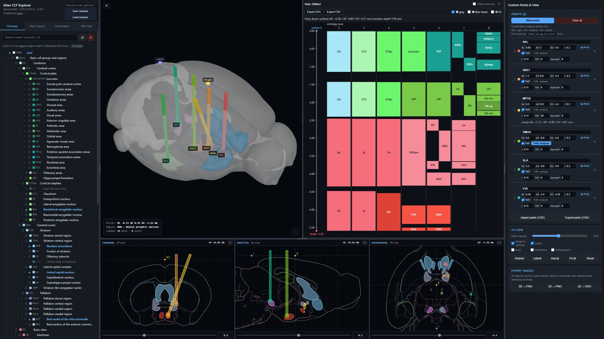

Plan
Allen CCF Explorer
Explore brain regions in 3D and design injection and implant targets in stereotaxic coordinates.
- 3D meshes for about 840 CCF structures, with coronal, sagittal and horizontal sections
- Register target points, pick them on a section, mirror them to the other hemisphere
- Path analysis: every region an angled insertion passes through, plus manipulator read-out
- Personal bregma calibration, sessions, PNG and vector SVG export